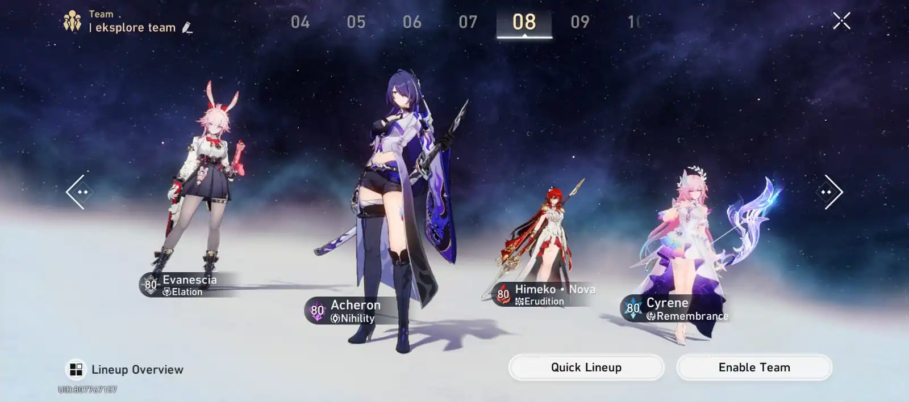

Daftar Tim
Andalan tim untuk menyelesaikan Memory of Chaos.
Damage over Time (DoT)
DPS: Kafka & Black Swan
Support: Ruan Mei
Sustain: Huohuo
Follow-up Attack (FUA)
DPS: Dr. Ratio & Topaz
Support: Robin
Sustain: Aventurine
Hypercarry Break
DPS: Firefly
Support: Harmony Trailblazer
Sustain: Gallagher

Rancang Tim Baru
Tentang
Halaman ini dibuat untuk memenuhi Lembar Kerja PABW Pertemuan 4 dengan pemanfaatan CSS berbasis token.